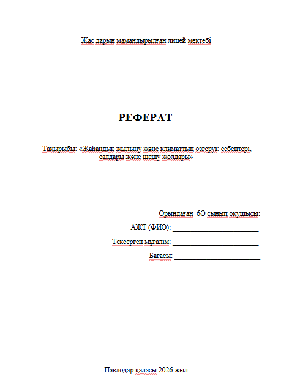
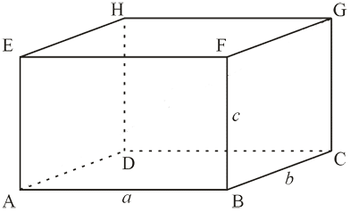

XXI ғасырда адамзат көптеген жаһандық проблемалармен бетпе-бет келді, бірақ олардың ішіндегі ең қауіптісі климаттың өзгеруі болып табылады. Жер өзінің көп миллиардтық тарихында жылыну мен суыту кезеңдерін бірнеше рет бастан өткерді. Алайда қазіргі кезеңнің түбегейлі айырмашылығы бар: болып жатқан өзгерістердің жылдамдығы бұрын-соңды болмаған жоғары, ал олардың басты қозғаушы күші — адамның іс-әрекеті. Бұл тақырыптың өзектілігі жаһандық жылынудың салдары таза ғылыми пікірталастардың шеңберінен шығып кеткендігімен түсіндіріледі. Бүгінде олар әлемдік экономикаға, ауыл шаруашылығына, адам денсаулығына және планетаның биоәртүрлілігіне тікелей әсер етуде. Осы рефераттың мақсаты — парниктік эффектінің пайда болу себептерін егжей-тегжейлі қарастыру, жылынудың қазіргі және болжанатын салдарын талдау, сондай-ақ осы дағдарыспен күресудің қолданыстағы стратегияларын зерттеу.
Жаһандық жылынудың мәнін түсіну үшін парниктік эффект механизмін ұғыну қажет. Бұл эффектінің өзі — табиғи және өмірлік маңызы бар құбылыс. Егер Жерде жылуды ұстап тұратын атмосфера болмаса, планетадағы орташа температура шамамен $-18^\circ\text{C}$ құрап, бізге үйреншікті өмір сүру мүмкін болмас еді. Атмосфера күн энергиясын Жер бетіне өткізеді, бірақ ғарышқа қайтатын жылу (инфрақызыл) сәулеленуін бөгеп, ұстап тұрады. Алайда соңғы 150 жылда — өнеркәсіптік революция басталғаннан бері — атмосферадағы газдардың тепе-теңдігі күрт өзгерді. Планетаның «қызып кетуіне» негізгі кінәлілер парниктік газдар деп аталатын келесі заттар болды:
Климаттың өзгеруі — бұл жай ғана температураның «бір-екі градусқа» көтерілуі емес. Бұл Жердің бүкіл экожүйесін тұрақсыздандыратын күрделі тізбекті реакция.
2.1. Мұздықтардың еруі және Дүниежүзілік мұхит деңгейінің көтерілуі
Жылынудың ең айқын көрсеткіштерінің бірі Гренландия, Антарктида және тау мұздықтарының мұз жамылғысының қарқынды қысқаруы болып табылады. Еріген су мұхитқа ағады, бұл судың термиялық кеңеюімен бірге оның деңгейінің көтерілуіне әкеледі. Таяу онжылдықтарда ірі жағалаудағы мегаполистер (Нью-Йорк, Шанхай, Токио, Амстердам) және тұтас аралдық мемлекеттер су астында қалу қаупінде тұр.
2.2. Экстремалды ауа райы құбылыстары
Артық жылу энергиясының кесірінен климаттық жүйе тұрақсыз болып барады. Біз жиі келесі жағдайларды байқаймыз:
Жаһандық жылыну — бұл ғылыми-фантастикалық фильмдердегі алыстағы қауіп емес, біз қазірдің өзінде өмір сүріп жатқан шындық. Бұл адамзат өркениеті үшін ең күрделі емтихан. Климаттық дағдарысты бір ғана елдің немесе ғалымдар тобының күшімен еңсеру мүмкін емес. Ол әлемдік экономиканы толық қайта құруды, біздің күнделікті әдеттерімізді өзгертуді және планетаның болашағы үшін жеке жауапкершілікті сезінуді талап етеді. Енжар бақылау уақыты өтті. Тек тұрақты даму мен экологиялық ойлау жолына түсу арқылы ғана адамзат Жерді болашақ ұрпақ үшін қолайлы, гүлденген және қауіпсіз күйде сақтай алады.
Климаттың өзгеруі адам өмірінің ең осал салаларына соққы береді. Ауыл шаруашылығы болжаусыз ауа райынан зардап шегуде: құрғақшылық созылмалы нөсер жаңбырлармен алмасып, егінді құртады және әлемнің кедей аймақтарының азық-түлік қауіпсіздігіне қатер төндіреді. Мүлдем жаңа ұғым — климаттық босқындар пайда болуда. Шөлденуден немесе су тасқынынан зардап шеккен аймақтардың тұрғындары (мысалы, Африка мен Оңтүстік Азияның кейбір аудандары) өз үйлерін тастап, неғұрлым қолайлы аймақтарға қоныс аударуға мәжбүр. Бұл әлемде үлкен әлеуметтік және экономикалық шиеленіс тудырады.
Жаһандық жылынумен күрес жаһандық күш-жігерді және технологиялық революцияны талап етеді. Бүгінгі таңда жұмыстың негізгі бағыттары мынадай:
4.1. Халықаралық келісімдер
Атмосфера бүкіл Жерге ортақ болғандықтан, мемлекеттер өзара келісуге тырысуда. Бүгінгі таңдағы басты құжат — көптеген елдер қол қойған Климат жөніндегі Париж келісімі. Оның мақсаты — жаһандық орташа температураның өсуін өнеркәсіпке дейінгі дәуірмен салыстырғанда $1,5–2^\circ\text{C}$ шегінде ұстап тұру.
4.2. «Жасыл» энергетикаға көшу
Адамзатқа көмір мен мұнайға тәуелділікті азайту қажет. Олардың орнына жаңартылатын энергия көздері (ЖЭК) келуде:
Күн электр станциялары.
Жел генераторлары.
Гидроэлектрстанциялар және геотермалдық көздер.
Сонымен қатар, қалалардағы көліктен шығатын зиянды шығарындыларды азайтуға бағытталған электромобильдер индустриясы дамып келеді.
4.3. Энергия тиімділігі және ұқыпты тұтыну
Қазіргі заманғы технологиялар энергияны ең аз тұтынатын «ақылды» үйлер салуға, қалдықтардың 90%-на дейін қайта өңдеуге (бұл метан шығарындыларын азайтады) және ауыл шаруашылығын жүргізудің экологиялық әдістерін енгізуге мүмкіндік береді. Әрбір адамның жеке үлесі де үлкен рөл атқарады: электр энергиясы мен суды үнемдеу, пластиктен бас тарту, ағаш отырғызу.
Тікбұрышты параллелепипед - бұл алты жағы бар және олардың әрқайсысы тікбұрыш болып табылатын көлемді фигура. Сынып бөлмесі, кірпіш, сіріңке қорабы тікбұрышты параллелепипедтің үлгісі бола алады. Тікбұрышты параллелепипедтің ортақ төбесінен шығатын үш қырының ұзындығы оның өлшемдері деп аталады. Берілген суретте өлшемдер ортақ төбесі B нүктесінде қиылысатын AB, BC және BF қырлары арқылы көрсетілген, ал өлшемдердің мәндері сәйкесінше олардың a, b және c ұзындықтарына тең.Тікбұрышты параллелепипедтің берілген өлшемдері бойынша оның бетінің ауданы мен көлемін анықтауыңыз керек.

мысал: